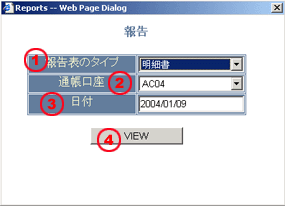
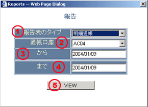

報告について
このシステムは2種類に区分されます。
お客様は画面上にあるメニューからレポートを選択して報告画面にアクセスすることが出来ます。
報告書
報告書は日常報告のことであらゆる特定日取引の取引金額状況や実行日の取引口座の証拠金が含まれています。当該報告書には次のものが含まれております。
メインスクリーンのメニューからユーザーは報告の選択によって、画面を操作することで報告書が読み取れる。報告の画面には必要とするインフォメションを提供してください
| 1 | 報告型 - 報告書のところに選択する |

|
| 2 | 口座 - 報告書のために取引口座のところに選択すること・ | |
| 3 | 日付 - 報告の取引日を選択すること・ | |
| 4 | 観察 - ボタンの一つで希望する報告を読み取れる |
すべて必要とするインフォメションを打ち込んだら、 VIEW ボタンをクリックすれば報告書分析画面に戻る。報告書分析画面にユーザーはその報告を選んだ後プリンターへ送ることができる。
元帳とはある一定期間にその取引口座のすべて係わる取引活動を記録されている期間報告です。とにかく、この報告は未実現損益の口座に対して何のインフォメションも提供しないのです。
メインスクットのメニューからユーザーは報告の選択によって、画面を操作することで報告書が読み取れる。報告の画面には必要とするインフォメションを提供してください。
| 1 | 報告型 - 元帳を選択 |

|
| 2 | 口座 - その報告に取引口座選択 | |
| 3 | から - 取引開始日を選択して報告を読み取れる | |
| 4 | まで - 取引終値日を選択して報告を読み取れる | |
| 5 | 予測を読む - 希望する報告を読むためにクリックするボタンのこと |
すべての必要とするインフォメションが書き込んだら、 VIEW
ボタンをクリックすれば報告書分析画面に戻る。報告書分析画面にユーザーはその報告を選んだ後プリンターへ送ることができる。